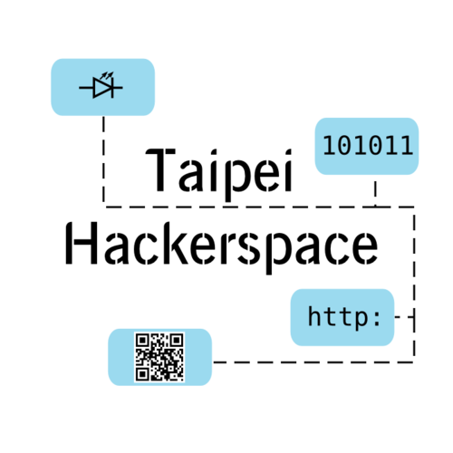

The Taipei Hackerspace 2017 General Assembly will be held on Tuesday, May 16, 2017 at 7:30 PM at the Taipei Hackerspace, 台北市太原路133巷26號4樓.
Everyone is welcome, but only members can vote.
Excerpt from the charter about the purpose of the General Assembly:
第 十四 條
會員大會之職權如下：
一、訂定與變更章程。
二、選舉及罷免理事、監事。
三、議決入會費、常年會費、事業費及會員捐款之數額及方式。
四、議決年度工作計畫、報告及預算、決算。
五、議決會員（會員代表）之除名處分。
六、議決財產之處分。
七、議決本會之解散。
八、議決與會員權利義務有關之其他重大事項。前項第八款重大事項之範圍由理事會定之。
Article 14
The function and responsibilities of the General Members Assembly are as follows:
1 Establish or amend the Constitution of Association.
2 Elect or recall Directors or Supervisors.
3 Decide initiation fees, yearly dues. Make decision on the association’s resources.
4 Review the annual proceedings of the Association, report and approve annual budgets,
and financial statements submitted by the Board of Directors.
5 Decide upon the expulsion of a member.
6 Approve any disposition of the property of the Association.
7 Decide upon the dissolution of the Association.
8 Determine important issues relevant to the rights and obligations of members of the Board of Directors.
Full (draft) text of the charter.
